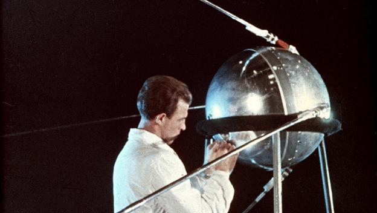
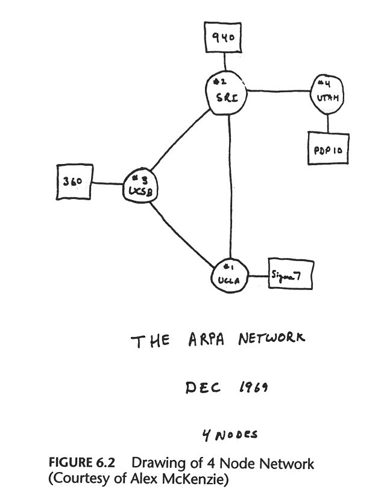
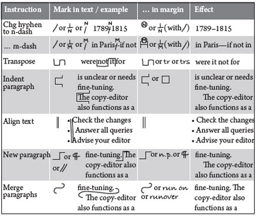

Dwight Eisenhower - American politician and Army general who served as the 34th President of the United States from 1953 until 1961.

Sputnik the first artificial satellite launched into space.


ARPA - (Advanced Research Project Agency) later DARPA (defense)



“The Internet as we know it really got started in the early 1960s.
That was when J.C.R. Licklider — a computer scientist with technology company Bolt, Beranek and Newman (BBN)
— formulated a few unique ideas about global networking in a series of memos, describing an
His idea: link computers together across the globe; and anybody near a computer could share information.”
As it turns out, Licklider had the right idea at the right time.
The Cold War had the United States searching for a communication network that could survive a nuclear attack.
quote taken by livescience.com
Tim Berners-Lee developed the first HTML (Hypertext Markup Language) in 1989.

(Published text has always been marked up so that the author and publisher
would be able to synchronize and layout a publication the way it has been envisioned.
TBL created a markup language that tells a web browser how to visually display a page the way the “author” envisioned it.)

Marc Andereessen added an image tag to HTML and founded Netscape - 1993

During the 90’s there were browser wars and HTML was becoming fragmented.TBL created

versions
- HTML 3.2 -1997
- HTML 4.01 - 1999
- XHTML - 2000
- HTML5 - 2014
there have been many versions of HTML. We are currently in version HTML5 and many people dont see a sixth one coming any time soon, if ever.